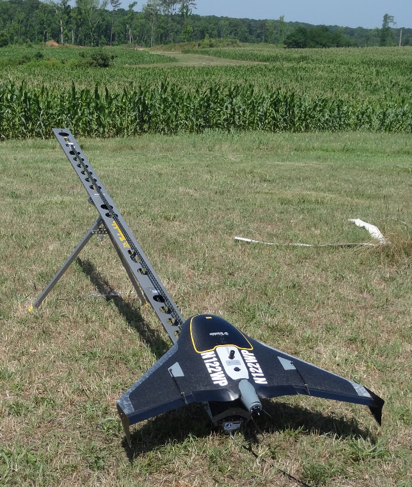

Flow analysis using sUAS and lidar data
Helena Mitasova, Justyna Jeziorska, Anna Petrasova, Vaclav Petras, Thomas Zajkowski
North Carolina State University, Raleigh, NC
Center for Geospatial Analytics,
Department of Marine, Earth and Atmospheric Sciences,
NextGen Air Transportation
Wroclaw University, Poland
Advances in 3D mapping
- Lidar and sUAS: increased capacity to
map 3D landscapes and assess the change on (almost) continuous basis
- Improved prediction of flooding and surface water flow

Study site
- NCSU experimental farms
- Surveyed by airborne lidar: 2001, 2013, 2015
- Test area for sUAS technologies


Lidar data
- Lidar survey by Leica ALS-70 in 2013
- multiple return point cloud with point density ~2 pts/m2
- DEM and DSM interpolated at 0.3m resolution

sUAS data
- Trimble UX5 system, flying at 138 m, camera 4900 x 3200
- Orthophoto 0.04 m resolution
- Digital Surface Model 0.15 m res, 172 pts/m2
- Repeated surveys for crop growth monitoring


sUAS data properties
- image overlap > 9, almost 1 million tie points
- processed by AGISOFT, Trimble, OpenDroneMap
- 12 GCPs installed to improve accuracy


distribution of vertical and horizontal error, avg. camera error 0.3,1.9,0.6 m
sUAS data comparison
- processed by AGISOFT without and with GCPs

sUAS data comparison
- comparison of DSMs processed by AGISOFT and Trimble
Lidar and sUAS data comparison
- lidar and uas difference maps, mean/median difference in open field
- reflects mapping errors but also terrain changes between 2013 and 2014
- REPLACE below map (dif demo flight uas and lidar - shows bowl effect)
with a map showing diff between lidar and improved sUAS processed with GCP

LCP MFD flowrouting
- least cost path MFD method - needed for DSMs with many true depressions
- REPLACE IMAGE some explanation here, ref to MM paper
- improved representation of streams

Watershed analysis based on lidar DEM
- LCP MFD flowtracing for watershed boundaries and streams
- shows the watershed extending beyond UAV mapped area
- improved representation of streams

Watershed analysis based on sUAS DSM
- LCP MFD flowtracing - includes dispersed water but no accumulated water in depressions
(add img)
- watershed boundaries (color) compared with lidar (lines)

LCP MFD flowaccumulation: lidar, sUAS
- level of detail and noise influence the LCP MFD flowrouting (0.3m, 0.3m, 0.18m)
- Tillage impact can be captured directly, based on microtopography captured by sUAS

Watershed analysis on fused UAS DSM and lidar DEM
- patch or reinterpolate the fused DSM at 0.2 or 0.3m resolution
- compare results, show smooth flow along the border of the patched area
- ADD FIGURE
Path sampling method for flow simulations
Robust stochastic method for rough surfaces


Simulated water depth on sUAS DSM
- Simulated surface water depth captures flow redirection by tillage
- Shifts between swaths on Trimble processed DSM leads to artificial flow pattern


Simulated water depth on sUAS DSM
- Flow redirection by tillage, dispersion and accumulation

Conclusions
- GCP crucial for proper DSM geometry
- High level of detail requires robust flowrouting that can handle depressions
NCSU OSGeoREL
geospatial.ncsu.edu/osgeorel/
- NCSU Open Source Geospatial Research and Education Laboratory
- Member of Geo4all initiative: global network for foss4g education
- NCSU NA leading lab: GRASS GIS development, courses, research projects
- GitHub: https://github.com/ncsu-osgeorel